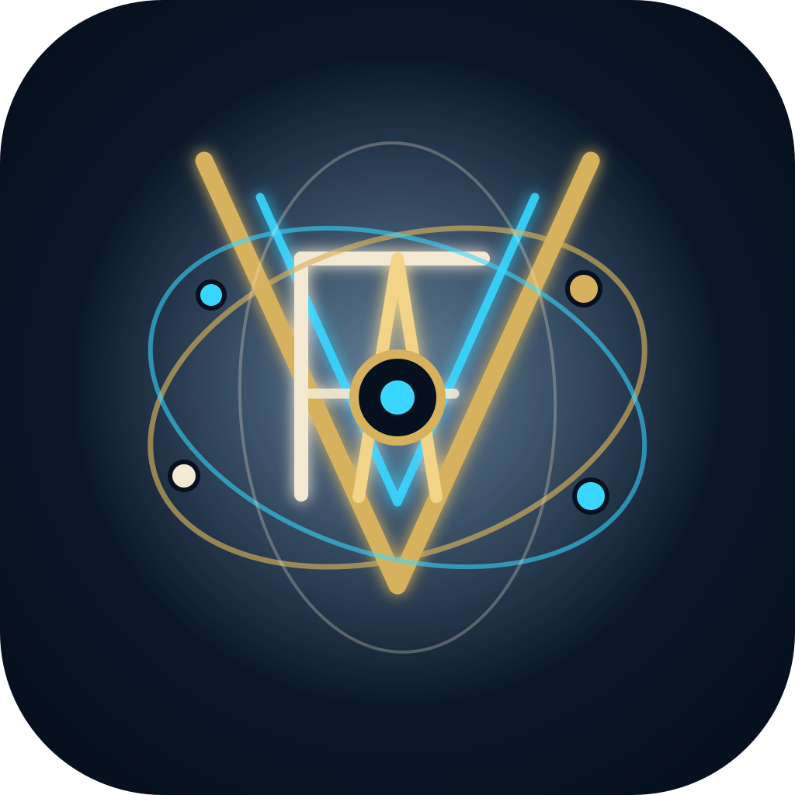
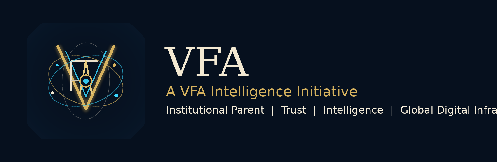
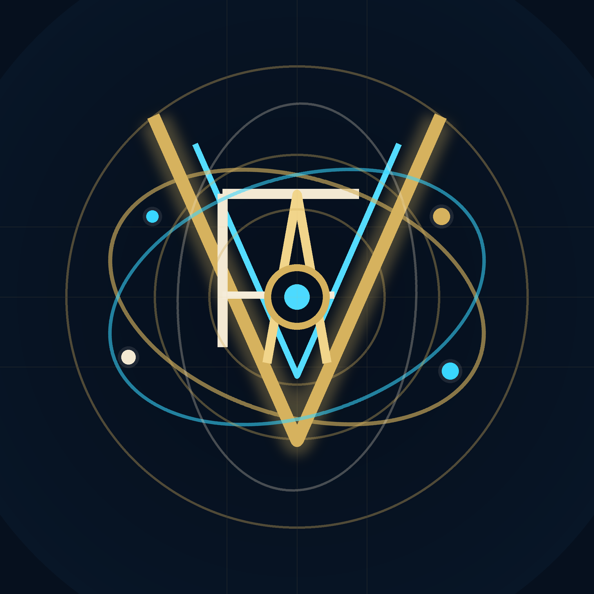

VFA Golden Ratio Identity
Institutional parent mark for global digital infrastructure, intelligence, trust and governance.
Primary Mark
Lockup

Construction


Institutional parent mark for global digital infrastructure, intelligence, trust and governance.

